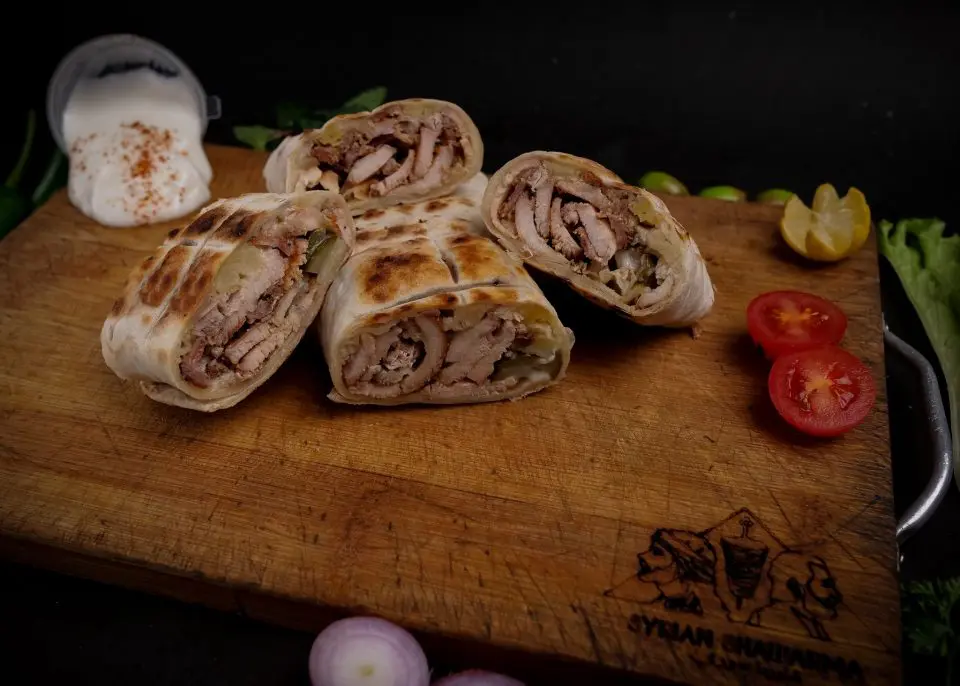
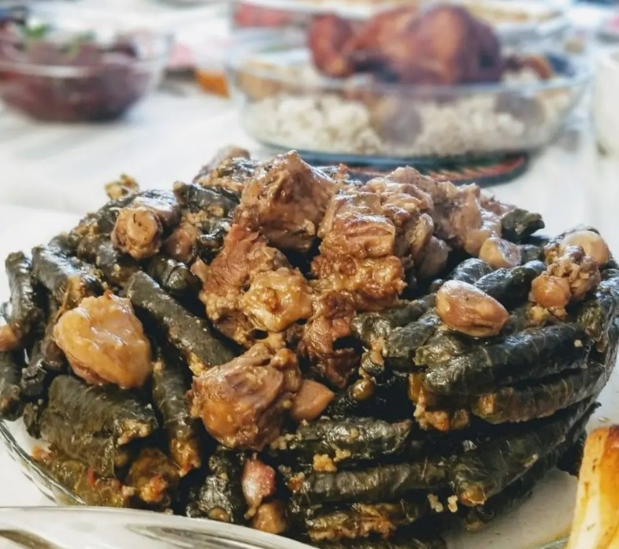
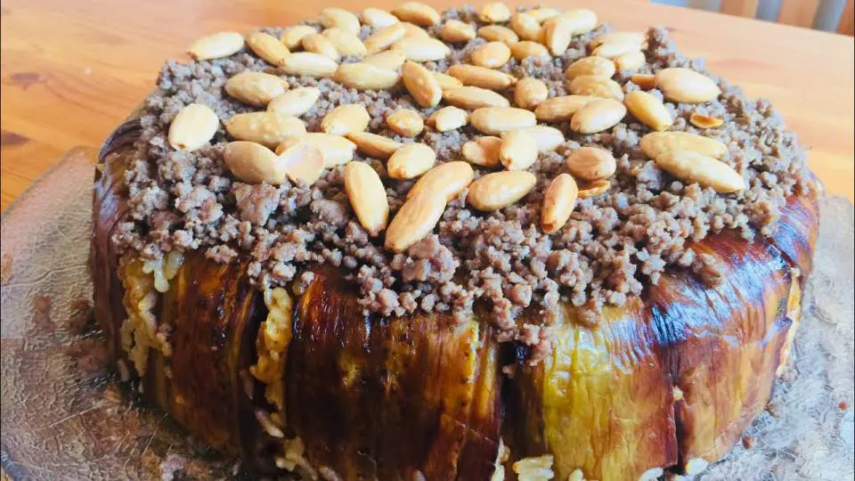
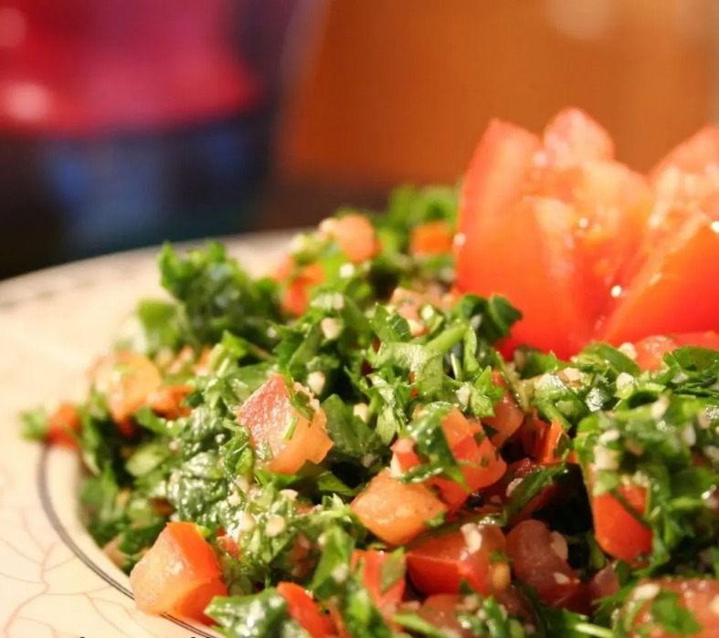
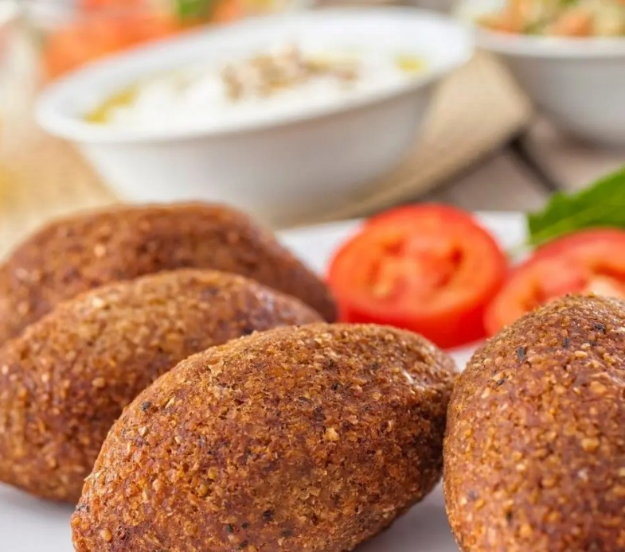
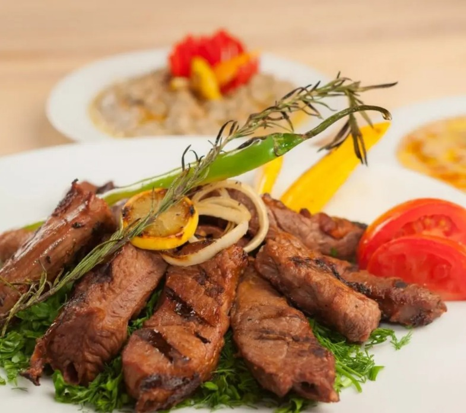
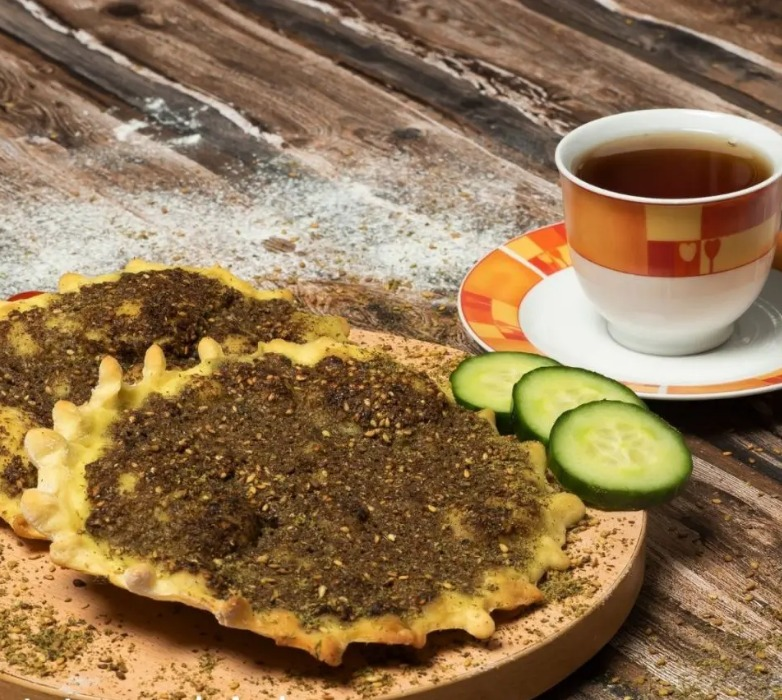
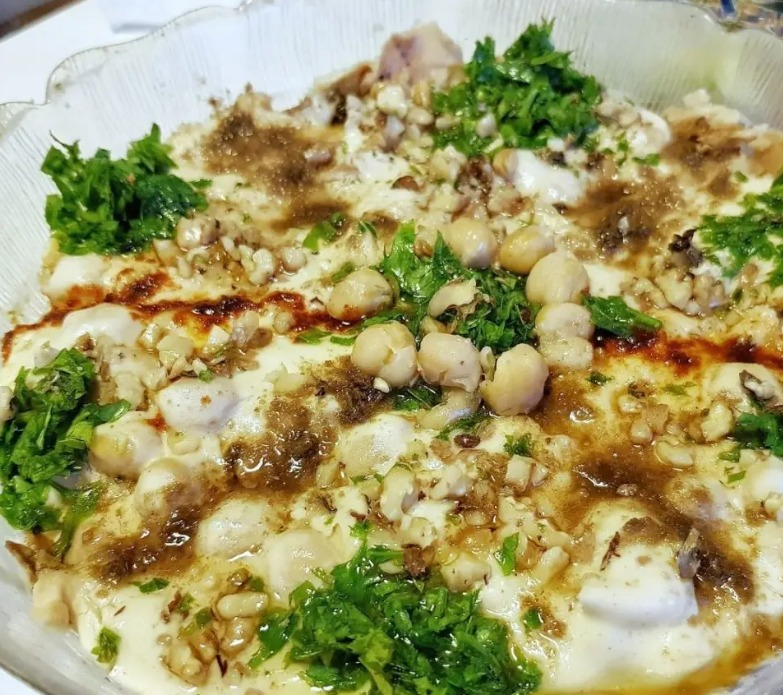

Shawarma is one of the most famous street foods in the Middle East. The roots of this delicious dish go back to the Levant and the Ottoman Empire, when, in 1906, Sadeeq Khabaz left his restaurant job in Bursa and traveled to Damascus to open a shawarma restaurant. Khabaz adapted the recipe, introducing the distinct taste of the Syrian shawarma.
How It Cooked Calories : 350-400

Syrian Shawarma
The Syrian yabrak (stuffed vine leaves) plate goes back to Ottoman times. The name yabrak is Turkish, meaning leaves of the vine. Yabrak became popular in the Levant as an appetizer or a main course. Yabrak leaves stuffed with rice and meat are served hot as a main meal. Yalanji, on the other hand, are leaves stuffed with rice and vegetables
How It Cooked Calories : 599

Yabrak
Maqlouba has been popular in Palestine, Syria, Lebanon, and Jordan for a long time. It is sometimes called Albathengania, due to the main ingredient, eggplant. The Syrian Maqlouba can be prepared in a couple of different ways. You can add potatoes or eggplant to chicken or lamb placed on the bottom of a big pot.
How It Cooked Calories : 394.2

Al-Maglouba
Tabouli is an Arabic salad that originated in Syria and Lebanon and then became famous all over the world. There is no doubt that tabouli is the most popular of Levantine appetizers. In any house you visit in Syria or Lebanon, for example, you will inevitably find a tabouli plate on the dining table, especially during the holy month of Ramadan.
How It Cooked Calories : 136

Tabouli
Kibbeh Kezabah colloquially means ‘lying Kibbeh’! It took on this name because it does not contain any meat—the implication being that those who eat it are deceived by its excellent taste. Adopted from Turkish cuisine, Kibbeh Kezabah is one of the most popular appetizers in the Middle East. It can be eaten with lettuce, lemon, or stuffed in a steaming vine leaf.
How It Cooked Calories : 257

Kibbeh
Syrian kebab is known as the best grilled meat. A favorite in the summer months is a kebab made of lamb mixed with garlic and parsley. There are more than 20 kebab recipes, but the most common is this simple smoky and tasty one. It is usually served with hummus, grilled vegetables, and salad.
How It Cooked Calories : 2000

Kabab
Traditionally, women baked the dough for manakish in the morning for their family’s daily bread. The round bread is baked spread with cheese, meat, zaatar, or tomato sauce, looking much like a pizza. It is now one of the world’s most popular Syrian foods and is delicious served with a cup of tea.
How It Cooked Calories : 541

Manakish
The origin of this famous Syrian dessert goes back to the city of Hama in the central area from which it spread to many other cities. Homs is also famous for Halawat El-Jeben, but Hama remains the first home of this yummy dessert. It is prepared with cheese, semolina, sugar, and blossom water.
How It Cooked Calories : 345
Halawat al-Jeben
Syrian Fatteh hommos is one of the most delicious Syrian foods. It is particularly common on the Syrian table in the holy month of Ramadan and is often found at extended family gatherings after Friday prayers. There is more than one type of Fatteh, so people can choose from the many tasty.
How It Cooked Calories : 559.0

Fatteh-Hommos
Balah al-Sham is of Syrian origin. However, stories vary about the reason for its name. Some attribute the name to the fact that it looks like dates—Balah means dates in Arabic. Balah al-Sham can be made simply at home. Just heat up oil, butter, sugar, and water until boiling, then add flour and mix to make a consistent dough.
How It Cooked Calories : 100